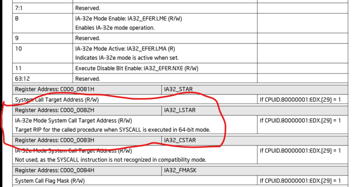

MSR_LSTAR レジスタ
arch/x86/kernel/cpu/common.c#L2029 でMSR_LSTAR というレジスタに entry_SYSCALL_64 関数のアドレスを登録すると、syscall 命令の実行時にこのアドレスにジャンプする。MSR_LSTAR がどういう作用を持つかはIntel® 64 and IA-32 Architectures Software Developer’s Manual Volume 4: Model-specific Registersに記述がある。

実際のコードの流れ
- arch/x86/kernel/cpu/common.c#L2029
wrmsrl(MSR_LSTAR, (unsigned long)entry_SYSCALL_64);
- arch/x86/entry/entry_64.S#L49-L170
syscall命令で最初に飛んでくるentry_SYSCALL_64関数
- arch/x86/entry/common.c#L75-L130
do_syscall_64
- arch/x86/entry/common.c#L42
do_syscall_64
- arch/x86/entry/syscall_64.c#L29-L31
x64_sys_call。巨大なswitchを生成している。
- fs/read_write.c#L652-L656
SYSCALL_DEFINE3(write, unsigned int, fd, const char __user *, buf, size_t, count)が実際にシステムコールを行うところ。